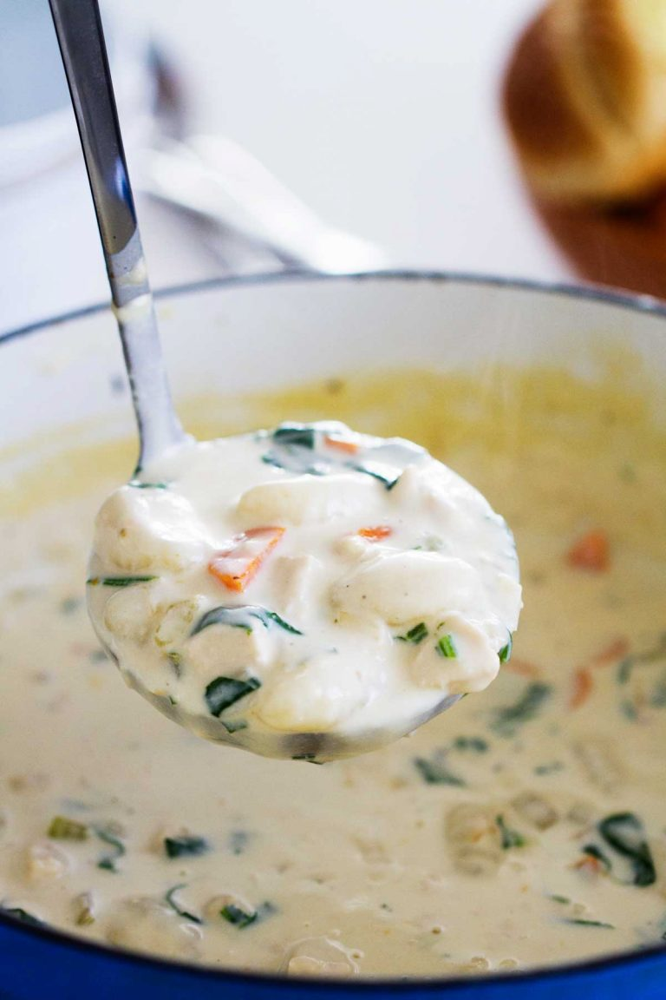

Chicken and Gnocchi Soup

A creamy and delectable soup that's great for cold days!
A copycat of Olive Garden's soup filled with vegetables, chicken,
and potato gnocchi in a creamy, flavorful soup.
Ingredients
- 2 tablespoons butter
- 2 tablespoons olive oil
- 1 cup diced onion
- 1 cup diced celery
- 1 cup diced carrots
- 2 cloves garlic, minced
- 1 teaspoon fresh thyme
- salt and pepper, to taste
- 1/4 cup all-purpose flour
- 2 cups chicken broth
- 4 cups half and half
- 2 cups cooked chicken, shredded or cubed
- 1 pound gnocchi, prepared according to the package directions
- 2–3 cups baby spinach, roughly chopped
Steps
- In a Dutch oven or heavy bottomed pot, heat the butter and olive oil over medium heat. Add the onions, celery, carrots, garlic and thyme and cook until softened, 5-10 minutes. Season to taste with salt and pepper.
- Stir in the flour and cook for a couple of minutes. Slowly whisk in the chicken broth, scraping up any browned bits on the bottom of the pan. Slowly whisk in the half and half. Stir in the chicken. Bring to a simmer and cook for 20 minutes.
- Add in the prepared gnocchi and spinach. Cook until the spinach has wilted.
- Taste soup and season with salt and pepper before serving.